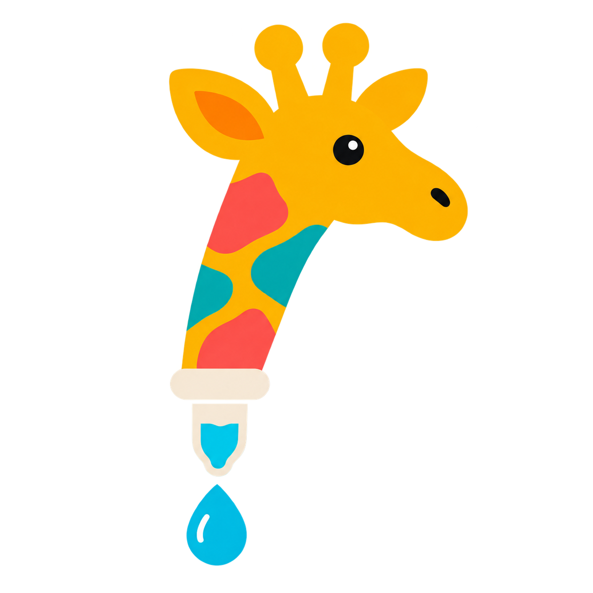

Pikseli yakala
9 × 9 büyüteçle istediğin noktayı seç. Seri seçimle tek seferde 24 renge kadar topla.
Chrome için renk seçici
Bir pikselden bütün bir palete. Web’de beğendiğin renkleri seç, adlandır ve projene CSS olarak taşı.

9 × 9 büyüteçle istediğin noktayı seç. Seri seçimle tek seferde 24 renge kadar topla.
Favorilerini projeye göre grupla. Renklerine verdiğin adlarla CSS değişkenlerini kopyala.
Yazı ve zemin renklerini seç. Kontrast oranını ve normal metin için AA sonucunu birlikte gör.
chrome://extensions sayfasında Geliştirici modu seçeneğini aç.manifest.json içeren klasörü seç.